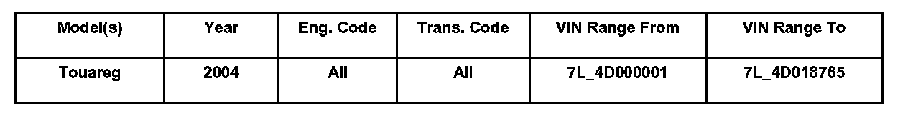
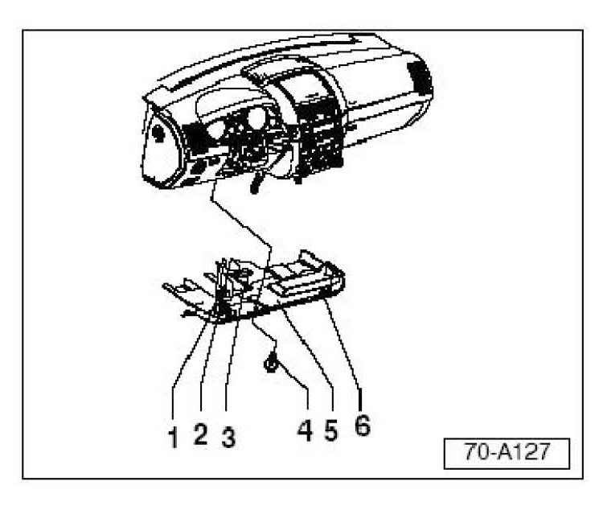
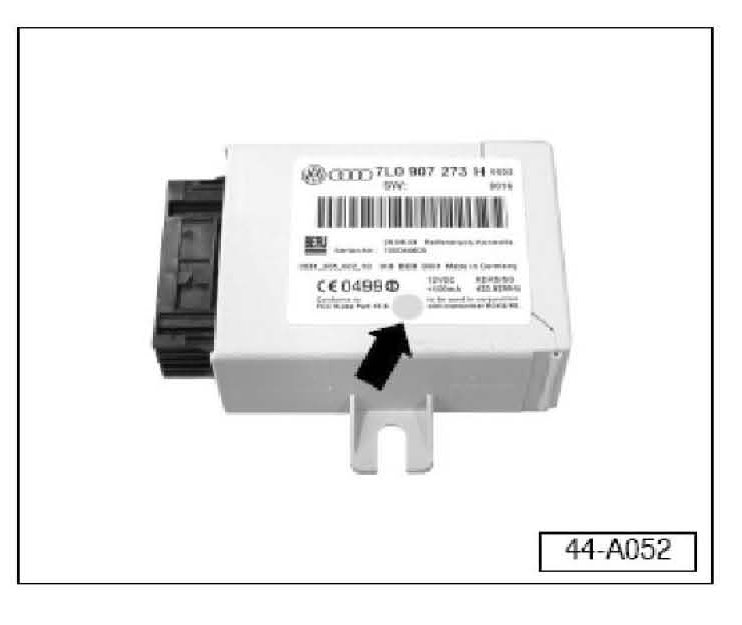
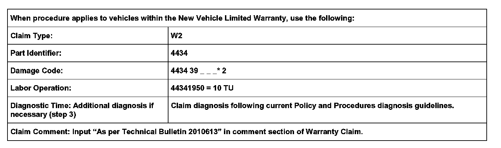

Tire Monitoring System - TPMS Lamp ON
44 07 03Mar. 23, 2007
2010613
Supersedes T.B. Group 44 number 05-04, dated November 8, 2005 due to inclusion into ElsaWeb.

Affected Vehicles
Condition
Tire Pressure Monitoring System, Warning Light Is ON
Technical Background
Reference Material
Refer to Owners Manual supplement (Literature No. 241.552.RDK.21) announced in Service Circular Literature and Supply VLS-04-01 or later.
Copies of this supplement may be ordered from Volkswagen Technical Literature Ordering Center at www.vw.resolve.com, or by calling 1-800-544-8021 from 8:00am to 8:00pm EST Monday through Friday. This number can be dialed in both the United States and Canada.
Production Solution
Introduction of updated Tire Pressure Monitoring Control Module after VIN: 7L_4D018765.
Service
Note:
Before performing this Technical Bulletin, see Technical Bulletin Group 44 Number 04-02 or later.
Perform the following three steps in order:
1. Check and, if necessary, replace Tire Pressure Monitoring Control Module prior to VIN: 71_4D018766.
2. Reassemble vehicle and follow " Store Tire Pressure Values" instruction.
3. Diagnosis information listed in Repair Manual.
PROCEDURE
Step 1
Check and if necessary, replace Tire Pressure Monitoring Control Module prior to 71_4D018766 following the procedure below:
- Switch ignition OFF.

- Remove bolt -4- (2X).
- Carefully pry driver side foot well cover -5- out of mountings near clip -6- using wedge T10039/1.
- Pull cover out of rear mountings.
- Disconnect foot well light -3- from wiring harness.
- Separate wiring harness -1- from diagnosis plug -2-.

- Inspect control module for Part No: 7L0 907 273H with green dot (arrow) or Part No: 7L6 907 273.
If control module is Part No: 7L0 907 273E or 7L0 907 273H without green dot:
- Disconnect control module (mounted on A-pillar).
- Install new control module with Part No: 7L6 907 273B.
- Code module to 0210390 (using VAS 5051 Self-Diagnosis).
Continue to Step 2.
If control module is Part No: 7L0 907 273H with green dot, Part No: 7L6 907 273 or Part No: 7L6 907 2738:
- Reinstall control module and continue to Step 2.
Step 2
Follow instructions in Owners Manual "Tire pressure monitoring system" to store tire pressure values.
If system learns and stores values and no warning lights are ON:
- Work is complete.
If system does not learn and store values or warning lights are ON:
^ Continue with step 3.
Step 3
^ Diagnose using the information found in the Repair Manual.
Warranty

* Code per warranty vendor code policy.
Required Parts and Tools
Tip:
Part number(s) are for reference only. Always see ETKA for the latest part(s) information.